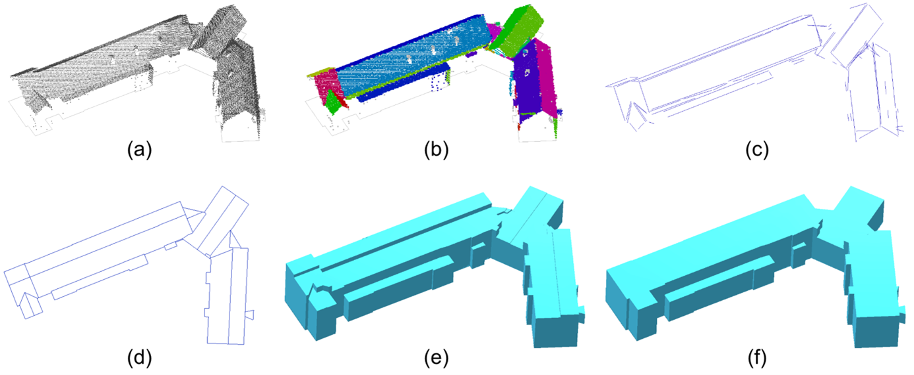

Creative Commons Attribution 4.0 International Public License (CC-BY)
Samenvatting
Dit document bevat de productbeschrijving van het 3D Basisbestand. Dit bestand bestaat uit drie producten en is beschikbaar bij het Kadaster in de 3D Basisvoorziening. Het 3D Basisbestand bevat driedimensionale topografische objecten voor heel Nederland. Het is een afgeleid product. Het is géén 3D BAG of 3D BGT, hoewel deze basisregistraties wel als bron voor dit afgeleide product zijn gebruikt. Het is ook geen authentieke bron voor deze data.
Deze productbeschrijving beschrijft de inhoud van het 3D Basisbestand, de voorwaarden waaronder het tot stand is gekomen, inclusief aspecten zoals kwaliteit en actualiteit, en het uitwisselingsformaat. Deze productbeschrijving is geen standaard, maar mag wel als eerste input voor een toekomstige 3D standaard worden beschouwd. Dit is ook de reden dat Geonovum betrokken is: om vanuit haar netwerk input mee te nemen van anderen die met 3D bestanden bezig zijn, om te komen tot een framework voor het beschrijven van 3D bestanden, en om issues, die te maken hebben met hoe geometrie in 2D input-bestanden is gemodelleerd, mee terug te nemen naar de 2D standaarden.
Status van dit document
Deze paragraaf beschrijft de status van dit document ten tijde van publicatie. Het is mogelijk dat er actuelere versies van dit document bestaan. Een lijst van Geonovum publicaties en de laatste gepubliceerde versie van dit document zijn te vinden op https://www.geonovum.nl/geo-standaarden/alle-standaarden.
Dit is een document zonder officiële status.
Deze productbeschrijving is geschreven onder redactie van Geonovum in opdracht van het Kadaster.
1. Inleiding
Driedimensionale (3D) stadsmodellen en 3D terreinmodellen worden steeds meer gebruikt bij het plannen en beheren van onze leefomgeving. Recente ontwikkelingen in technieken voor het inwinnen van 3D-hoogte-informatie, LiDAR en fotogrammetrie, hebben het relatief eenvoudig gemaakt om 3D-stadsmodellen automatisch te reconstrueren en deze data te gebruiken voor bijvoorbeeld planning en omgevingssimulaties.
De huidige 3D stadsmodellen die door verschillende organisaties worden geproduceerd, verschillen echter nog steeds sterk vanwege verschillen in acquisitiemethoden, verschillen in applicaties waarvoor de 3D-gegevens worden ingewonnen, verschillen in datastructuren, bestandsformaten, enzovoort.
Daarom verschillen 3D-stadsmodellen (die meer omvatten dan 3D-gebouwen) vaak sterk van elkaar. Bovendien is er doorgaans geen plan om de eenmaal gegenereerde gegevens actueel te houden. Het gevolg is dat 3D-stadsmodellen geen deel uitmaken van de reguliere gegevensinfrastructuren en deze gegevens worden daardoor nog steeds onvoldoende gebruikt in besluitvormingsprocessen van de overheid.
Om actuele 3D gegevens over grootschalige (dat wil zeggen, zeer gedetailleerde) topografie uniform beschikbaar te hebben voor diverse overheidsprocessen, zou deze, vanuit technisch oogpunt, het beste kunnen worden ingewonnen als onderdeel van de Basisregistratie Grootschalige Topografie (BGT) en Basisregistratie Adressen en Gebouwen (BAG) onder de verantwoordelijkheid van de verschillende bronhouders van deze gegevens. Maar op dit moment is het niet haalbaar en ook niet wenselijk voor alle BAG en BGT bronhouders om aanvullende 3D-gegevens te verzamelen.
Daarom heeft het Kadaster een 3D basisvoorziening ingericht om, vooruitlopend op een 3D BAG/BGT in de (verre) toekomst, actuele 3D gegevens voor heel Nederland beschikbaar te stellen. De 3D basisgegevens in deze voorziening zijn gereconstrueerd op basis van BGT en BAG. Dit gebeurt op een volledig automatische wijze. De 3D gegevens worden landsdekkend, dat wil zeggen voor heel Nederland, gereconstrueerd en beschikbaar gesteld in de open standaard CityJSON via het overheidsplatform voor open geoinformatie, PDOK. De 3D basisvoorziening die in de zomer van 2020 beschikbaar is gekomen, is gebaseerd op zowel puntenwolken gegenereerd uit luchtfoto’s (ingewonnen in 2018) als Actueel Hoogtebestand Nederland (AHN) versie 3 (ingewonnen tussen 2014 en 2019). De 3D basisvoorziening zorgt ook voor beheer en periodieke updates van de 3D gegevens, en sluit daarbij aan op andere informatie-initiatieven zoals Doorontwikkeling in Samenhang (DiSGeo) en de daarbij behorende samenhangende objectenregistratie (SOR).
Dit document beschrijft een eerste versie van het 3D Basisbestand Volledig. We zijn benieuwd naar de gebruikerservaringen en de mogelijke onvolkomenheden om het bestand te verbeteren.
1.1 De 3D Basisvoorziening
De 3D Basisvoorziening bestaat uit drie producten die allemaal automatisch worden gegenereerd:
Het 3D Basisbestand Volledig: een combinatie van LoD1.2 gebouwen, terrein en bruggen.
Het 3D Basisbestand Gebouwen: LoD1.3 gebouwen, met daaraan gekoppeld attributen die de kwaliteit van ieder gebouwmodel beschrijven.
Het 3D Hoogtestatistieken Gebouwen: tweedimensionale (2D) gebouwen waaraan verschillende hoogte-waarden zijn toegekend.
Noot
1.1.1 3D Basisbestand Volledig
Figuur 1visualisatie van data uit het 3D Basisbestand Volledig
Het product 3D Basisbestand Volledig, een combinatie van LoD1.2 gebouwen met terrein en bruggen, bestaat uit terreinvlakken, gegenereerd uit BGT maaiveld-objecten met in het terrein geïntegreerde gebouwen.
Figuur 2gereconstrueerde brugvlakken
De gebouwen in dit product worden gegenereerd door de BAG-geometrie van het gebouw op te trekken tot een enkele hoogte, de zogenaamde LoD1.2-weergave (zie onderstaande figuur). Het horizontale grondvlak van de gebouwmodellen is altijd ingesteld op het laagste snijpunt met het maaiveld om te voorkomen dat het gebouw gaat zweven.
Het 3D Basisbestand Gebouwen bevat blok-modellen waarbij hoogtesprongen van meer dan 3 meter binnen een gebouw in het model worden onderscheiden (conform LoD1.3). Denk bijvoorbeeld aan een kerk met een toren of een huis met een aangebouwde schuur. Gebouwen die zich volledig ondergronds bevinden of boven één of meerdere andere gebouwen zweven, zijn gefilterd uit deze dataset.
1.1.3 3D Hoogtestatistieken Gebouwen
In het product 3D Hoogtestatistieken Gebouwen zijn de 2D BAG-geometrieën van gebouwen door middel van de gedetecteerde hoogtesprongen opgesplitst in zogenaamde dakdelen. Ieder dakdeel is gemodelleerd als een 2D polygoon waaraan verschillende hoogte-waarden zijn toegekend, zoals hoogste dakrand, laagste dakrand en de mediane dakhoogte. Deze verschillende hoogte-waarden representeren verschillende referentiehoogten die berekend worden op basis van verschillende statistische parameters van de hoogtepunten die zich binnen het dakdeel bevinden. Afhankelijk van de toepassing kan een gebruiker beslissen welke referentiehoogte moet worden gebruikt om het 3D model te reconstrueren. Het bestand 3D Hoogtestatistieken Gebouwen is (zoveel als mogelijk) in LoD1.3 beschikbaar. Daarbij is de geometrie opgeknipt in verschillende delen op basis van hoogtesprongen. Voor de situaties waarbij een reconstructie van LoD1.3 niet mogelijk is, is het bestand aangevuld met LoD1.2 geometrieën met minder diversiteit aan statistische waarden.
2. Semantisch model
2.1 Inhoud van de 3D basisvoorziening
De data die in de 3D basisvoorziening beschikbaar wordt gesteld, volgt het semantisch model zoals gedefinieerd in CityGML [CityGML2] en gebruikt door CityJSON (zie Hoofdstuk 4). CityJSON bevat de volgende klassen waar de gebruikte BGT en BAG klassen onder vallen:
LandUse
GenericCityObject
Building
Plantcover
Bridge
Road
WaterBody
De oorspronkelijke BAG en BGT gegevens zijn nog aanwezig samen met enkele andere extra attributen die nodig zijn voor het ontwikkelproces van de 3D bestanden. Zo is voor de BAG een extra attribuut gecreëerd om na controle van de vlakken het oorspronkelijke BAG ID opnieuw toe te voegen aan elk object.
De brugdelen van de BGT zijn samengevoegd tot één brugobject en komen dus niet meer overeen met de afzonderlijke delen van de brug, zoals die in de BGT zijn opgenomen.
Voor het maken van de 3D geometrie van gebouwen is de BAG als basis genomen, omdat de BAG geometrieën de gebouwen van bovenaf modelleren en het meest geschikt zijn om op te trekken op basis van hoogtes uit luchtfoto’s (die ook van bovenaf worden ingewonnen).
BAG-panden en omringende BGT-terreinen sluiten topologisch niet altijd perfect op elkaar aan. Hierdoor kunnen gaten ontstaan in het terrein model, wat kan leiden tot een onjuiste 3D-reconstructie van een gebouw. Om dit op te lossen is de BGT representatie van de panden toegevoegd aan de terreinobjecten. Hierdoor ontstaat een gesloten terreinmodel.
2.2 Attribuutspecificatie van het 3D Basisbestand Gebouwen
In het 3D Basisbestand Gebouwen komen de volgende attributen voor:
Attribuutnaam
Beschrijving
fid
Feature ID (alleen uniek binnen de tabel).
identificatie
BAG identificatie
h_maaiveld
NAP hoogte van gebouw
dak_type
Daktype van het gebouw. Zie onderstaande tabel.
pw_datum
Inwinningsdatum van de puntenwolk.
pw_actueel
Past de datum van de puntenwolk bij het bouwjaar van het gebouw?
pw_bron
Bron van de puntenwolk.
reconstructie_methode
Gebruikte reconstructie methode.
versie_methode
Versie nummer van de gebruikte reconstructie methode.
lod
Level of Detail (detailniveau) van het gebouw.
kas_warenhuis
Het gebouw is een kas of warenhuis (volgens TOP10NL).
ondergronds_type
Ondergrondse klasse van het gebouw. Zie onderstaande tabel.
rmse
Root Mean Square Error van de reconstructie.
De attributen dak_type en ondergronds_type hebben als inhoud een gelimiteerde waardelijst. Zie daarvoor de onderstaande tabellen.
2.2.1 Waardelijst dak_type
waarde
betekenis
2
dak met minimaal één schuin vlak
1
dak bestaand uit meerdere horizontale vlakken
0
dak bestaand uit een enkelvoudig horizontaal vlak
-1
geen hoogtepunten gevonden voor het gebouw
-2
geen dakvlak kon gedetecteerd worden, ook al werden hoogtepunten gevonden
2.2.2 Waardelijst ondergronds_type
waarde
betekenis
0
gebouw is volledig bovengronds.
1
gebouw is volledig ondergronds.
2
gebouw bevindt zich boven ander gebouw
2.3 Attribuutspecificatie van het product 3D Hoogtestatistieken Gebouwen
In het product 3D Hoogtestatistieken Gebouwen komen de volgende attributen voor:
Attribute Name
lod13_2d
lod13_3d
Description
fid
x
x
Identificatie (ID) van het geo-object (alleen uniek binnen de tabel).
identificatie
x
x
BAG identificatie.
pand_deel_id
x
ID van een onderdeel van een pand (BuildingPart).
dd_id
x
ID van een dakonderdeel (Roof part).
h_maaiveld
x
x
NAP hoogte boven maaiveld (groundlevel). Berekend als het 5e percentiel van de grondpunten die gevonden zijn binnen een 4 meter radius van het gebouw. Eenheid: meter
dd_h_dak_min
x
NAP hoogte op dakniveau. Berekend als het minimum van alle hoogtepunten op het corresponderende deel van het dak. Eenheid: meter
dd_h_dak_50p
x
NAP hoogte op dakniveau. Berekend als het mediaan van alle hoogtepunten op het corresponderende deel van het dak. Eenheid: meter
dd_h_dak_70p
x
NAP hoogte op dakniveau. Berekend als het 70ste percentiel van alle hoogtepunten op het corresponderende deel van het dak. Eenheid: meter
dd_h_dak_max
x
NAP hoogte op dakniveau. Berekend als het maximum van alle hoogtepunten op het corresponderende deel van het dak. Eenheid: meter
dd_data_coverage
x
Oppervlakte van het deel van het dak dat bedekt is met AHN3 punten.
Inwinningsdatum van de puntenwolk. In het geval van AHN3 is dit de veronderstelde inwinningsdatum, die wordt vastgesteld op de 1e december in het jaar voorafgaand aan het officieel gerapporteerde inwinjaar van een specifieke AHN3 tegel.
pw_actueel
x
x
Komt de datum van de puntenwolk overeen met het bouwjaar van het gebouw?
pw_bron
x
x
Bron van de puntenwolk.
reconstructie_methode
x
x
Reconstructiemethode van het gebouwmodel.
versie_methode
x
x
Versie van de gebouwreconstructiemethode.
kas_warenhuis
x
x
Het gebouw is een kas of warenhuis (volgens Top10NL).
Indicatie van de mate van zekerheid dat de reconstructie realistisch is, vergeleken met het gebouw in de werkelijkheid. Zie opmerking.
rmse
x
Gemiddelde kwadratische fout (RMSE) tussen de puntenwolk en het LoD1.3 model.
geom
x
x
Geometie. Voor lod13_2d is dit de 2D dakonderdeel geometrie (Polygon, EPSG 28992). Voor lod13_3d is dit de 3D geometrie van het gebouw (MultiPolygonZ, EPSG 7415).
lod
x
x
Het Level of Detail (detailniveau) van de gereconstrueerde geometrie. De defaultwaarde is 1.3, maar in sommige gevallen was dit niet mogelijk en is een LoD1.2 geometrie geproduceerd.
3. Methodes van inwinning, voorbewerking en reconstructie
Voor het reconstrueren van de 3D data is gebruik gemaakt van 2D geometrieën uit de BAG en BGT en van hoogtegegevens die verkregen zijn uit puntenwolken. Voor het vervaardigen van puntenwolken zijn luchtfoto’s uit de winter van 2018 gebruikt. Aangezien bronhouders van de BGT en de BAG ook gebruik maken van deze luchtfoto’s om hun bestanden te actualiseren, hebben we een latere peildatum voor de BAG en BGT gekozen. Dit zorgt voor een zo klein mogelijk actualiteitsverschil tussen de hoogtegegevens en 2D geometrieën. Zie Tabel 1 voor meer informatie.
Tabel 1: actualiteit en toepassing van de brondata
Brondata
Toepassing
Peildatum / inwinperiode
BGT
Terrein
01-01-2019
BAG
Gebouwen
01-01-2019
Luchtfoto's
hoogtegegevens
winter 2018
Luchtfoto's
infraroodgegevens ten behoeve classificatie van hoge vegetatie
zomer 2018
3.1 Voorbewerking van BAG en BGT
Om de objecten uit de BAG en de BGT als input te kunnen gebruiken voor het automatische reconstructieproces zijn een aantal voorbewerkingen uitgevoerd. Hierbij werden de objecten gevalideerd en verrijkt met informatie. Waar nodig werden de geometrieën van de objecten geïntegreerd met de geometrie van omliggende objecten. Hierbij moet worden opgemerkt dat niet alle geometrische bewerkingen correcties zijn op de BGT, maar dat het gaat om het geschikt maken van de data voor het 3D reconstructieproces. Hierdoor zijn de 2D objecten niet altijd meer dezelfde als in de oorspronkelijke BGT en BAG.
De belangrijkste geometrische bewerkingen zijn:
Het verwijderen van self-intersecties (polygonen of lijnen die zichzelf doorkruizen) en arcs (bogen).
Het verwijderen van dubbele objecten waarbij zoveel mogelijk het nieuwste object behouden is
het op elkaar aansluiten ('snappen') van geometrische objecten die elkaar raken (hoek, overlap of gedeelde grens) waarbij eventueel datapunten worden toegevoegd. Dit wordt gedaan om gaten in het BGT maaiveld dicht te krijgen, maar ook om in de BAG aansluitende panden ook werkelijk te laten aansluiten.
het uitlijnen van datapunten op een grid ten behoeve van de nauwkeurigheid van alle validaties. Alle resulterende coördinaten worden in millimeters opgeslagen.
Om de geometrische objecten te integreren met hun omgeving worden twee bewerkingen uitgevoerd:
De topologie tussen verschillende hoogteniveaus wordt hersteld om 3D reconstructie mogelijk te maken. Hierbij worden waar nodig datapunten op gedeelde grenzen en bij kruisende objecten geïntroduceerd. Dit speelt met name voor overbruggingsdelen en bijzondere objecten.
Topologische fouten die problemen kunnen veroorzaken in het reconstructieproces, zoals overlappingen, gaten, en zgn. spikes (uitschieters), worden opgespoord en automatisch gecorrigeerd. Hierbij worden ongeclassificeerde objecten gecreëerd voor gaten in de BGT.
Noot
3.2 Het genereren van de puntenwolken
Voor de reconstructie van 2D naar 3D zijn hoogtegegevens nodig voor twee dingen: voor de hoogtebepaling van BAG-panden, en voor de hoogtebepaling van de maaiveldobjecten (BGT). Deze hoogte wordt verkregen door het toepassen van semi-global matching op de stereofoto’s die ingewonnen worden in de landelijke voorziening beeldmateriaal. Deze voorziening koopt voor de overheidspartijen in Nederland landsdekkend beeldmateriaal in voor het bijhouden van de basisregistraties BAG, BGT en de Basisregistratie Topografie (BRT). Voor de hoogtebepaling uit beeldmateriaal worden de stereofoto’s van de wintervlucht gebruikt.
Tabel 2: Kenmerken stereofoto’s 2018
Kenmerk
waarde
toelichting
Ground Sampling Distance (GSD)
10cm
Overlap in de strook
60%
Overlap tussen de stroken
30%
Vlieghoogte
+/- 1700m
grootste deel van Nederland
+/- 4300m
westelijk Nederland rondom Schiphol
De nauwkeurigheid van de resulterende hoogte wordt onder andere door de overlap in de strook en de vlieghoogte bepaald. Voor punten die worden gegenereerd uit luchtfoto’s ingewonnen op een vlieghoogte van 1700m is dat 15cm; voor punten gebaseerd op beelden ingewonnen op een vlieghoogte van 4300m is dat 35cm (sigma-1).
Noot
In een tweede stap wordt er een Digital Surface Model (DSM), een digitaal model van het aardoppervlak van Nederland, gegenereerd op basis van de verkregen puntenwolken. Dit DSM is een 2.5D hoogtemodel dat wordt opgeslagen als een grid met een pixelmaat van 20 centimeter. Elke pixel in dit grid krijgt in principe één hoogtewaarde die wordt bepaald door de meest betrouwbare hoogste waarde te nemen. Voor sommige pixels is het echter niet mogelijk om de hoogtewaarde vast te stellen (bijvoorbeeld door reflectie op water of schaduwen op een gebouw). Voor deze pixels wordt geen interpolatie toegepast. Hierdoor bevat elke vierkante meter van het DSM maximaal 25 hoogtewaarden.
Als laatste stap wordt het DSM automatisch geclassificeerd in de categorieën gebouw, water, bruggen, hoge vegetatie, ground en de restcategorie not classified. Hierbij wordt voor water en bruggen gebruik gemaakt van BGT polygonen en voor gebouwen van BAG polygonen. Voor de classificatie van hoge vegetatie is gebruik gemaakt van de infraroodgegevens van de lage resolutie zomervlucht van de Landelijke Voorziening Beeldmateriaal. In bosgebieden, waar het maaiveld niet automatisch kan worden gedetecteerd, wordt data uit het AHN gebruikt. De categorie ground (ook wel aan te duiden met Digital Terrain Model (DTM)) wordt uitgedund naar 4 punten per vierkante meter.
Na deze stappen is de puntenwolk geschikt als input voor de 3dfier software, zodat 3D geometrieën uit de 2D geometrieën van de BAG/BGT kunnen worden gegenereerd.
3.3 3D reconstructie met 3dfier
Voor het toekennen van hoogte aan de BGT maaiveldobjecten gebruiken we de open source software 3dfier. Deze software is ontwikkeld in een samenwerking tussen Kadaster en de 3D geoinformation vakgroep van de TU Delft en kan voor verschillende scenario’s ingezet worden.
Noot
De software genereert automatisch 3D-representaties op basis van 2D-topografie en puntenwolken en houdt daarbij ook rekening met de semantiek van elke polygoon. De opgetrokken polygonen worden aan elkaar "gestikt" zodat één digitaal oppervlaktemodel wordt gereconstrueerd.
Noot
Figuur 4een landsdekkend waterdicht terreinmodel met gebouwvolumes
Hiermee wordt een landsdekkend waterdicht (i.e. aansluitend) 3D terreinmodel verkregen, zonder overlap en gaten, waarbij BGT-gebouwen geïntegreerd zijn in het maaiveld. Dit 3D terreinmodel kan vervolgens worden gebruikt als input voor bijvoorbeeld simulatiesoftware.
De LoD1.2 gebouwen zijn gereconstrueerd op basis van hun BAG geometrie en de 3D puntenwolk, waarbij een maximale en minimale hoogte is gebruikt om een 3D volumegeometrie te construeren. De maximale hoogte is bepaald op basis van het 90 percentiel van de hoogtepunten die binnen een BAG geometrie vallen. Om te voorkomen dat gebouwen boven het maaiveld zweven wordt het laagste punt in het maaiveld dat door de BAG geometrie geraakt wordt gebruikt voor de bepaling van de hoogte van het grondvlak.
3.4 LoD1.3 reconstructie
Bij de LoD1.3 reconstructie worden dakdelen met verschillende hoogtes gedetecteerd en als zodanig opgetrokken. Hierbij wordt een drempel hoogtesprong gebruikt van 3 meter, omdat dit ongeveer gelijk wordt geacht aan een verdieping.

Figuur 5de verschillende stappen in de LoD1.3 reconstructie methode
Het LoD1.3 reconstructieproces gebeurt via de volgende stappen (zie ook Figuur 5)
Selecteer de hoogtepunten boven het BAG-polygoon. Hierbij worden alleen de punten gebruikt die als gebouw zijn geclassificeerd in de puntenwolk.
Detecteer vlakken in de puntenwolk met behulp van een ‘region-growing’ algoritme om alle dakvlakken te identificeren. In deze stap worden ook punten verwijderd die zich op een muurvlak (gevel) bevinden of geen deel uitmaken van een vlak;
Detecteer de omlijning van de dakvlakken met behulp van α-shapes en een ‘region-growing’ lijndetectie-algoritme op de α-shape omlijning;
Splits de BAG-polygoon op in dakdelen met behulp van de lijnen uit stap 3. De lijnen worden eerst geregulariseerd en dan samengevoegd met het BAG polygoon om tot een 2D-planaire partitie van het BAG-polygoon te komen. Deze partitie wordt vervolgens geoptimaliseerd met een methode die lijkt op die van Zebedin [Zebedin2008]. Het doel van deze optimalisatie is het behalen van een zo eenvoudig mogelijke opsplitsing die tegelijkertijd een zo klein mogelijke afwijking ten opzichte van de puntenwolk heeft.
Trek elk dakdeel op tot zijn mediale hoogte.
Verwijder hoogtesprongen die kleiner zijn dan 3 meter.
Voor deze reconstructie is gebruik gemaakt van het AHN3. Verder zijn de volgende opmerkingen van toepassing:
Delen binnen een BAG polygoon waarvoor in het AHN3 alleen maaiveldpunten bestaan zijn van het gebouw afgeknipt. Dit komt bijvoorbeeld voor bij ondergrondse garages.
Kassen / warenhuizen (uit TOP10NL) en andere grote gebouwen (oppervlakte >100 000 m2) zijn altijd gereconstrueerd in LoD1.2
Gebouwen die nieuwer zijn dan het AHN zijn gereconstrueerd als LoD1.2 op basis van de puntenwolken uit luchtfoto’s.
4. Data-formaat en beschikbaar stellen
4.1 Data-formaat
Het 3D Basisbestand Volledig en het 3D Basisbestand Gebouwen worden beschikbaar gesteld in CityJSON. De dataset 3D Hoogtestatistieken Gebouwen wordt beschikbaar gesteld in GeoPackage (versie 1.2) [GeoPackage1.2].
4.1.1 CityJSON
CityJSON is een JSON codering van het CityGML gegevensmodel (versie 2.0.0). CityGML is een open standaard en uitwisselingsformaat om digitale 3D-modellen van steden en landschappen te definiëren. CityGML is een officiële standaard van het Open Geospatial Consortium (OGC).
CityJSON beschrijft zowel de geometrie als de semantiek van de meest gebruikte 3D-objecten (zoals gebouwen, wegen, rivieren, bruggen, vegetatie en stadsmeubilair) en legt daarbij de relaties tussen objecten vast. Het definieert ook verschillende standaard LoDs voor de 3D-objecten, waardoor meerdere detailniveaus van objecten voor uiteenlopende toepassingen en doeleinden kunnen worden weergegeven.
CityJSON is ontwikkeld om programmeurs optimaal te faciliteren in het lezen en bewerken van 3D datasets door middel van tools en APIs. Omdat met name bij web- en mobiele toepassingen snelheid van belang is, is een CityJSON-object zo compact mogelijk beschreven, waarbij alle voor het object relevante informatie conform CityGML behouden blijft.
Noot
4.1.2 GeoPackage
GeoPackage is een op SQLite gebaseerde internationale open standaard van het OGC, waarmee je geografische informatie kunt uitwisselen. Voordelen van het uitwisselen van data in GeoPackage is dat je een GeoPackage direct kunt openen, zonder de data te converteren. Het is gemakkelijk en zonder veel achtergrondkennis te gebruiken. Ook is de bestandsomvang kleiner dan bijvoorbeeld een GML bestand.
GeoPackage is geen 3D formaat, maar omdat het 3D Hoogtestatistieken Gebouwen product in feite een 2D bestand met 3D hoogteinformatie is, is GeoPackage hiervoor een geschikter formaat dan CityJSON.
4.2 Beschikbaarheid
Het 3D Basisbestand Volledig, het 3D Basisbestand Gebouwen en de 3D Hoogtestatistieken Gebouwen zijn beschikbaar via een downloadservice op PDOK. De 3D Hoogtestatistieken Gebouwen zijn te downloaden als één landelijk bestand. Het 3D Basisbestand Volledig en het 3D Basisbestand Gebouwen kunnen gedownload worden in afzonderlijke tegels (5km x 6km) die worden aangeboden ter selectie op een geïndexeerde kaart.
Objecten die in meerdere tegels vallen zijn weggeschreven in alle tegels waartoe zij behoren. Dit is gedaan om ervoor te zorgen dat een gebruiker niet naar de tegel hoeft te zoeken waarin een object dat een tegelgrens kruist, zich bevindt. De gekozen tegelgrootte sluit aan bij de kaartbladindeling van BRT (en AHN).
Deze grootte van vooraf gedefinieerde tegels is een keuze met voor- en nadelen: hoe kleiner de tegelgrootte, des te kleiner het bestand, waardoor de data beter te hanteren is. Maar bij een kleine tegelgrootte vallen er meer objecten in meerdere tegels, waardoor het totale datavolume dat wordt aangeboden groter is. Een kleine tegelgrootte heeft daarnaast als nadeel dat meer objecten over meerdere tegels heen lopen.
In een later stadium wordt de beschikbaarheid op PDOK mogelijk uitgebreid met een 3D viewer. Indien haalbaar zal de service ook downloads op basis van een willekeurig interessegebied gaan ondersteunen. Met dat laatste zal het redundant wegschrijven van tegels, resulterend in enorme datavolumes, zijn opgelost omdat tegels on the fly (i.e. op het moment van opvragen) zullen worden gegenereerd.
A. Bijlage: Gebruikte parameters voor 3Dfier
Voor het maken van de 3D Basisvoorziening is gebruik gemaakt van de volgende parameters voor 3Dfier:
B. Bijlage: Meer informatie over het 3D Basisbestand Gebouwen
Het 3D Basisbestand Gebouwen bevat het gereconstrueerde 3D model van het BAG gebouw. De gebouwen die zich volledig ondergronds bevinden of boven één of meerdere andere gebouwen zweven, zijn gefilterd uit deze dataset. De ondergrondse delen van een gebouw zijn tijdens de reconstructie afgesneden en verwijderd.
B.1 Opmerkingen over attributen
Waarden van het attribuut kwaliteits_klasse zijn nog niet definitief (d.w.z. dat het aantal klassen kan veranderen).
B.2 Bekende issues met het 3D Basisbestand Gebouwen
Er wordt nog actief gewerkt aan de reconstructie methode voor LoD1.3 gebouwen. Momenteel zijn de volgende issues bekend:
De waarde voor h_maaiveld is incorrect (te laag) voor sommige gebouwen.
Niet alle 3D geometrieën zijn valide. Voor sommige gebouwen kunnen een of meerdere vlakken incorrect of niet aanwezig zijn.
Gebouwen met een glazen dak zijn mogelijk niet realistisch gereconstrueerd.
Sommige gebouwen ontbreken of worden slechts door een hele kleine geometrie gerepresenteerd.